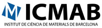

Copenhagen business school
 Center for Applied Information and Communication Technology (CAICT) Center for Applied Information and Communication Technology (CAICT)
Center for Applied ICT (CAICT) focuses on technology and the use of technology. CAICT wishes to explore the middle ground with continued and mutual beneficial affiliation between the centre and business through partnering based on social dialogues. It is a multi-disciplinary centre that embraces theories and methods on social, human and business aspects of emergent technologies. CAICT works with design, implementation and impacts of ICT. The research and education is based on public and externally founded activities, where focus is on themes such as Business IT, Digital Customs Systems, Business Models for Mobile Services, Digital Government, e-Participation, e-Health, Human Computer Interaction, e-Inclusion and ICT Innovation and Entrepreneurship. CAICT wants an extensive collaboration with partners, which is a principal in the mission statement: “co-creating value with ICT through partnerships”.
Leif.B.Rasmussen and Janni Nielsen
INSTITUT DE CIÈNCIA DE MATERIALS, ICMAB-CSIC

The Institut de Ciència de Materials de Barcelona (ICMAB), is a research centre which depends on the Consejo Superior de Investigaciones Científicas (CSIC). The Institute was set up in 1987 and subsequently, in April 1991, the laboratories were opened on the campus of the Universitat Autònoma de Barcelona (UAB). Since the Institute foundation until February 2008, it has been directed by Prof. Carlos Miravitlles, the coordinator of this Coordination Action.
The mission of ICMAB is to carry out research aimed at obtaining and characterizing materials and nanomaterials of industrial interest. At present there are 47 permanent scientific staff and a total of 214 people divided in eight departments, general services and technical and scientific services. 2.731 scientific papers have been published by ICMAB’s researchers in Journals included in the SCI, with 32.039 cites (h-index of 67), and an average of citations per item of 11.73. Thus, ICMAB is the most active institute in Materials Science in Spain.
VENETO NANOTECH S.C.P.A.
The Region of Veneto is the centre of the technological cluster for nanotechnologies, with strong scientific and productive competences, along with great application potentials in its industrial environment. Moreover, Veneto boasts the highest entrepreneurship rate in Italy, and a high concentration of businesses that are mostly interested in nanotechnology. The aforementioned characteristics of the region rendered it the most attractive site to develop the nanotech cluster. Its establishment and the creation of Veneto Nanotech in 2003, was done after a careful valuation and analysis of the Italian business reality regarding innovation and technology transfer, and has grown to coordinate the activities of the hi tech cluster of nanotechnology.
Nicola Trevisan
DEPARTMENT OF SOCIAL SCIENCES OF THE UNLU
.jpg) The Department of Social Sciences of the UNLu offers academic services to most of the degrees of the University. The activities of teaching and investigation are organized from the Divisions which are: Administration, International Trade and Marketing, Law of Right, Economy, Epistemology and Methodology, Geography, History, Countable Information and Social Work. Main lines of investigation that are being developed in the Department include issues such as history and economics, social and demographic structure of the region of Buenos Aires; environment, woman, health and feeding, among others. The Department of Social Sciences of the UNLu offers academic services to most of the degrees of the University. The activities of teaching and investigation are organized from the Divisions which are: Administration, International Trade and Marketing, Law of Right, Economy, Epistemology and Methodology, Geography, History, Countable Information and Social Work. Main lines of investigation that are being developed in the Department include issues such as history and economics, social and demographic structure of the region of Buenos Aires; environment, woman, health and feeding, among others.
H.A.Bacarini
CONSEJO SUPERIOR DE INVESTIGACIONES CIENTÍFICAS
 The Spanish National Research Council (CSIC) is the largest public institution dedicated to research in Spain and the third largest in Europe. Belonging to theSpanish Ministry of Science and Innovation through the Secretary of State for Research, its main objective is to develop and promote research that will help bring about scientific and technological progress, and it is prepared to collaborate with Spanish and foreign entities in order to achieve this aim. According to its Statute (article 4), its mission is to foster, coordinate, develop and promote scientific and technological research, of a multidisciplinary nature, in order to contribute to advancing knowledge and economic, social and cultural development, as well as to train staff and advise public and private entities on this matter. The Spanish National Research Council (CSIC) is the largest public institution dedicated to research in Spain and the third largest in Europe. Belonging to theSpanish Ministry of Science and Innovation through the Secretary of State for Research, its main objective is to develop and promote research that will help bring about scientific and technological progress, and it is prepared to collaborate with Spanish and foreign entities in order to achieve this aim. According to its Statute (article 4), its mission is to foster, coordinate, develop and promote scientific and technological research, of a multidisciplinary nature, in order to contribute to advancing knowledge and economic, social and cultural development, as well as to train staff and advise public and private entities on this matter.
S. Garelik
|